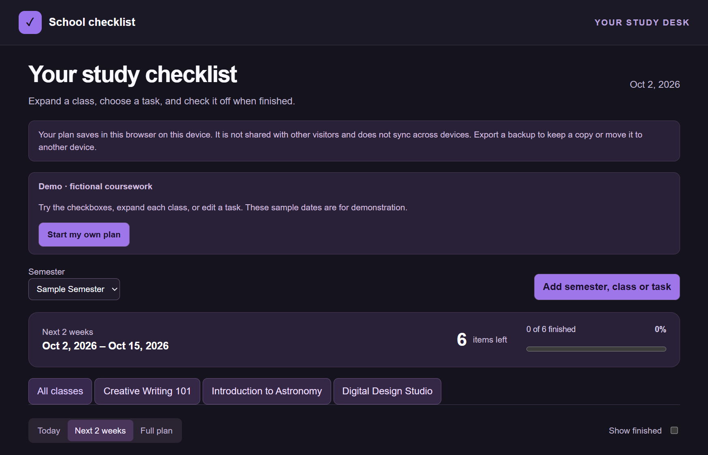
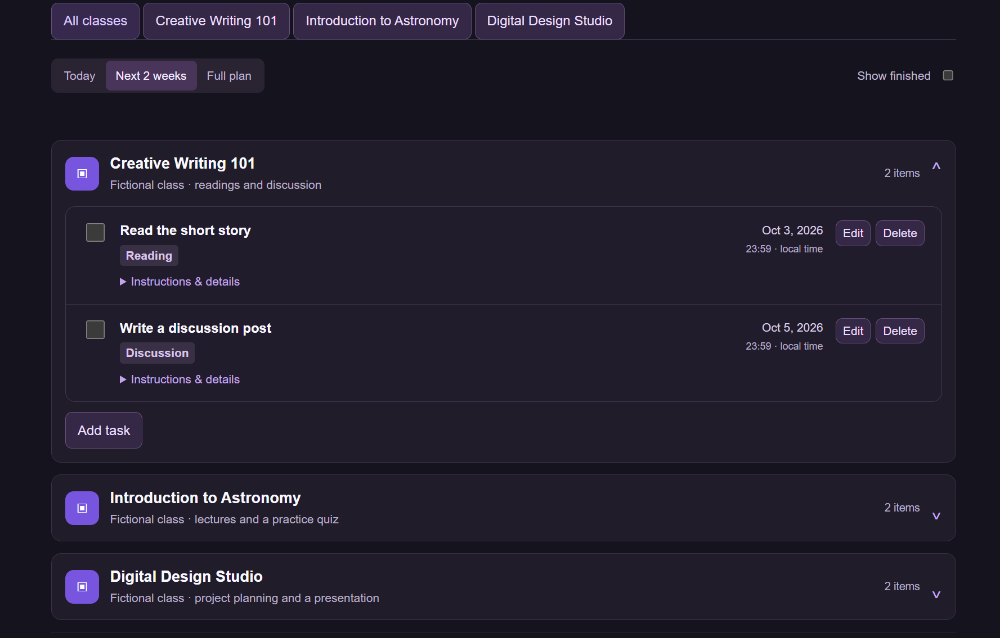
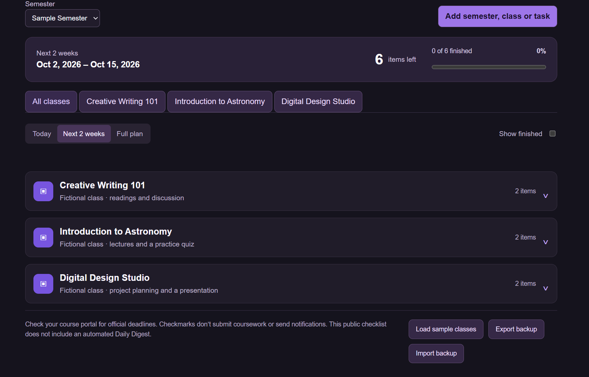

1. Gathered Source Information
Collected course schedules, D2L deadlines, and instructor announcements covering assignments, readings, lectures, and exams.
AI-Assisted Productivity & Automation Project
A student productivity system I created to reduce the time spent checking school deadlines and make it easier to decide what to work on next.
Project Overview
School information can be spread across course schedules, D2L deadlines, instructor announcements, readings, lectures, and exam dates. I wanted a faster way to understand what was coming up without repeatedly checking each source.
I created a system with two related parts: an automated Daily Digest that organizes upcoming school information into a rolling two-week lookahead, and an interactive School Checklist for managing individual classes and tasks.
The goal was simple: reduce the time I spend searching for deadlines and make it easier to choose what deserves my attention next.
Process
Collected course schedules, D2L deadlines, and instructor announcements covering assignments, readings, lectures, and exams.
Used ChatGPT to organize the information into a rolling two-week lookahead with upcoming deadlines first, along with weather and dinner ideas. I scheduled the digest for 8 AM Central.
Built an interactive checklist with AI assistance, including expandable classes, individual task checkboxes, saved progress, and Today, Next 2 Weeks, and Full Plan views.
Used a dark purple theme, hid completed work by default, and placed detailed instructions inside expandable sections to keep the interface easier to navigate.
Replaced estimated dates with supplied D2L deadlines, separated multipart activities, and flagged conflicting or unconfirmed information instead of treating uncertain information as final.
Expanded the checklist so new semesters, classes, tasks, dates, and notes could be entered instead of limiting the system to one predefined schedule.
Replaced my personal coursework with fictional classes so visitors could safely explore the project and then create their own plan.
Automation
The Daily Digest organizes school information into a rolling two-week lookahead and is scheduled for delivery at 8 AM Central.
Upcoming deadlines are prioritized so assignments, readings, lectures, and exams that need attention are easier to identify. Weather and dinner ideas are also included to make the digest useful for planning more than coursework alone.
Instead of starting the day by manually checking several different sources, the digest gives me one organized place to begin.
Interactive Checklist

The School Checklist provides a visual way to manage the same type of academic workload. The interface includes Today, Next 2 Weeks, and Full Plan views so the amount of information shown can match what the user needs at that moment.
Progress tracking shows how many tasks remain and how much work has been completed. Classes can also be filtered so users can focus on one course instead of viewing the entire semester at once.
Course Organization

Each class can be expanded to reveal its individual assignments. Tasks can contain due dates, task types, and additional instructions, while checkboxes allow progress to be recorded as work is completed.
Completed work is hidden by default to reduce clutter. More detailed information is also placed inside expandable areas so the main view remains focused on what needs attention.
Semester Planning

The checklist is not limited to the fictional coursework shown in the demonstration. Users can create semesters, add classes, and enter their own tasks, dates, and notes.
This makes the interface reusable as courses and responsibilities change rather than requiring a completely new checklist each semester.
Accuracy
An important part of the project was improving the information feeding the system. Early planning information sometimes included estimated dates, multipart activities, or details that needed additional confirmation.
I replaced estimated dates with supplied D2L deadlines when they became available, separated activities that contained multiple pieces of work, and flagged conflicting or unconfirmed information.
This reinforced an important lesson from the project: an organized interface is only useful when the information behind it is clear and accurate.
Privacy-Conscious Design
My working system contains information related to my actual school schedule. I did not want to publish that information simply to demonstrate the project.
Instead, I created a public version using fictional classes, assignments, and deadlines. Visitors can explore the interface, load the sample coursework, or start creating their own plan.
Information entered into the public checklist is saved in the visitor's browser. The checklist also includes backup export and import features so users can save a copy of their plan.
The public checklist currently operates separately from my scheduled Daily Digest and does not expose my personal academic information.
AI-Assisted Development
AI assistance was used throughout the project, but the process began with a real problem and source information I gathered from my coursework.
I used ChatGPT to help organize the Daily Digest and used AI assistance while developing the interactive checklist. I continued refining the project by reviewing the coursework, correcting dates, separating tasks, changing the interface, testing how information was presented, and deciding what should be included in the public version.
This process helped me learn how important clear inputs, verification, testing, and iteration are when using AI to build a tool around real-world information.
What I Learned
Clear source information, accurate deadlines, simple navigation, and privacy-conscious design are essential when turning an AI-generated plan into a useful tool.
I also learned that adding more information does not automatically make a productivity system better. The information has to be organized so the most important tasks are easy to find without overwhelming the user.
Next Steps
The public checklist currently operates separately from my scheduled Daily Digest. A future improvement would connect completed checklist tasks to the digest so finished work no longer appears as something that still needs attention.
I would also like to add live calendar updates so changes to deadlines and upcoming events can be incorporated into the planning workflow more easily.
Try It
The public version uses fictional coursework to demonstrate the project without exposing my personal academic information. You can explore the sample semester or create your own plan.